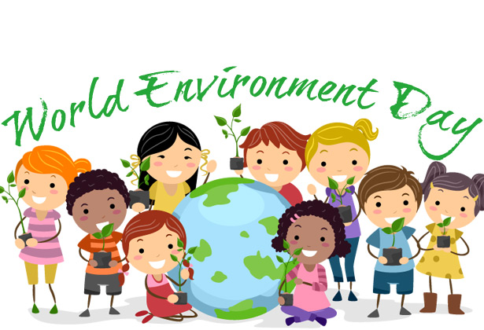

- Children's Efforts
- In Nepal Republic all the Students from Grade 1 to A level are compulsory to attend the afforestation programmers on their respective locality with the supervision of SOS Villages and Nepal Government. Many Arts and drawing competitions are held on environmental day and Nepal Government declares the Scholarship for 15 Students from all cities that have major contribution for the environment mainly selected from Madhesi, a backward Community in Nepal. In 2012, Project Earth, an Online Eco Platform teamed up with Rio+20 and LaunchedIn 2012, Project Earth, an Online Eco Platform teamed up with Rio+20 and Launched ' World Environment Day Global School Contest 2012 ' to promote awareness among today's youth.
Every country had a winner.
Project GreenOman,The winner from Oman, was an Eco organization founded by Hridith Sudev and is a full-fledged kid's Eco Organization now.